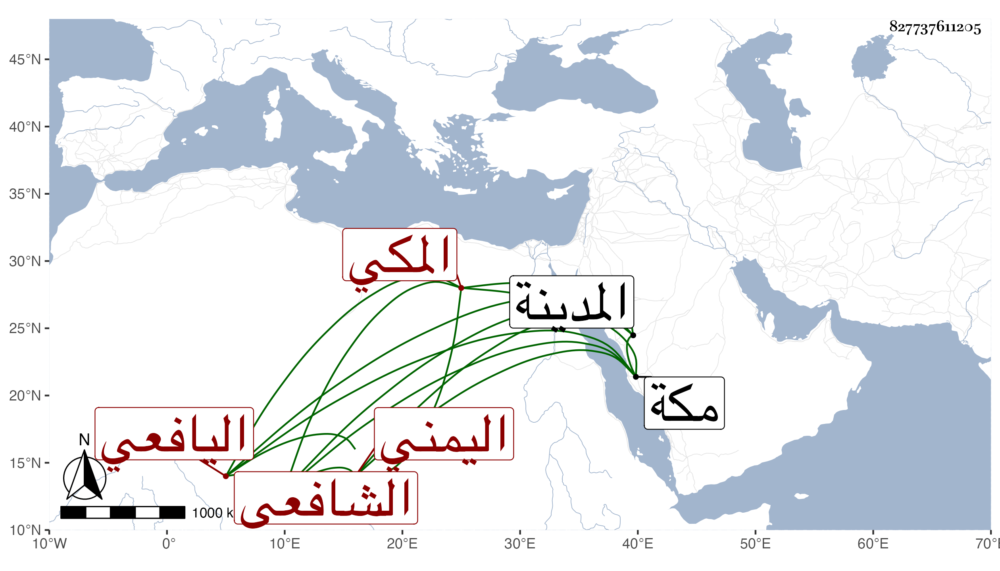

0902Sakhawi.DawLamic.ITO20230111-ara1.EIS1600.827737611205
Biography ID: 827737611205
251
زينب ابنة عبد الله بن أسعد بن علي بن سليمان بن فلاح أم المساكين ابنة الولي العفيف أبي محمد اليافعي اليمني ثم المكي الشافعي أخت عبد الوهاب الماضي . ولدت في جمادى الأولى سنة ثمان وستين وسبعمائة بالمدينة النبوية وأجاز لها ابن أميلة والصلاح ابن أبي عمر وأبن السوقي وأبن النجم وأبن الهبل وأبن قاضي الزبداني والأذرعي والأسنوي وأبو البقاء السبكي وأبن القاري والتقي البغدادي والنشاوري وآخرون ، وخرج لها النجم بن فهد مشيخة حدثت بها وبغيرها أخذ عنها الفضلاء وكانت جليلة . ماتت في جمادى الأول أيضا سنة ست وأربعين بمكة وقبرت مع أبيها رحمهما الله وإيانا .
